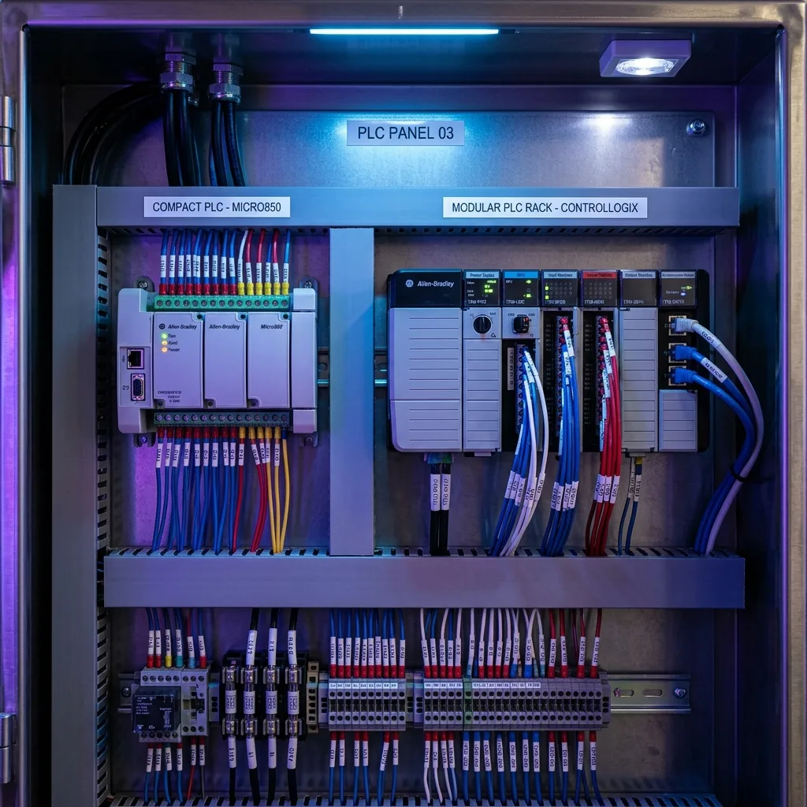

Tipos de PLC: Clasificación Completa, Características y Ejemplos de Uso en la Industria

La búsqueda "tipos de plc" ocupa una posición destacada entre las tendencias de interés industrial en Coahuila. Esto se debe a que no todos los procesos requieren el mismo tamaño de procesador o capacidad de expansión. Un fabricante de estampados automotrices en Saltillo no necesita el mismo equipo que una embotelladora o un fabricante de aire acondicionado en Ramos Arizpe.
En esta guía desglosaremos los principales tipos de PLC agrupados por su estructura física, su capacidad de procesamiento y su aplicación funcional en la industria.
1. PLC Compactos (Nano y Micro PLCs)
Son controladores donde la fuente de alimentación, la CPU (procesador) y los módulos de entrada y salida vienen integrados en una sola carcasa o bloque indivisible. Poseen un número fijo de conexiones (por ejemplo, 14 entradas y 10 salidas).
- Ventajas: Económicos, de tamaño reducido y muy sencillos de instalar.
- Limitaciones: Si se dañan un par de terminales o se requieren más entradas, a menudo hay que cambiar el módulo completo.
- Ejemplos populares: Siemens S7-1200, Allen-Bradley Micro800, Logo!, Mitsubishi FX.
- Ejemplo de uso en planta: Control de una mesa giratoria de ensamble manual o una lavadora industrial de piezas metálicas.
2. PLC Modulares
Son los favoritos para líneas de producción medianas y grandes. En este tipo de PLC, el equipo se construye como un "LEGO": existe un riel DIN donde ensamblas módulo por módulo según lo requiera tu proyecto.
- Componentes separados: Módulo de fuente de poder + Módulo de CPU + Módulos de entradas digitales + Módulos analógicos (4-20mA / 0-10V) + Módulos de comunicación (EtherNet/IP, Profinet, DeviceNet).
- Ventajas: Alta flexibilidad y fácil mantenimiento. Si falla una tarjeta de entradas, solo reemplazas esa tarjeta sin tocar la CPU ni el programa.
- Ejemplos populares: Allen-Bradley CompactLogix 5370/5380, Siemens S7-1500.
- Ejemplo de uso en planta: Celdas robóticas de estampado de chasis automotriz en Ramos Arizpe.
3. PLC de Montaje en Rack (Gama Alta e Industrial Compleja)
Similar al modular, pero utiliza un chasis reforzado de alta velocidad (Rack) que incluye un bus de comunicación de alta velocidad en la parte posterior (Backplane). Permiten colocar CPUs redundantes (si falla una CPU, la segunda toma el control instantáneamente sin detener la fábrica).
- Ejemplos populares: Allen-Bradley ControlLogix 5570/5580, Siemens S7-400 / S7-1500H.
- Ejemplo de uso en planta: Hornos de fundición de acero, plantas químicas continuo o líneas completas de pintura automotriz.
4. PLC de Seguridad (Safety PLC)
Son controladores diseñados bajo normativas internacionales de seguridad funcional (SIL 3 / ISO 13848 PL e). Poseen procesadores redundantes que verifican doblemente cada señal.
¿Para qué se usan? Se encargan exclusivamente de la seguridad humana: paros de emergencia, cortinas de luz láser, escáneres de zona y candados de puertas en celdas de robots para evitar accidentes laborales.
5. SoftPLC (PLC basado en Software / PC Industrial)
Es un programa que ejecuta el ciclo de escaneo de un PLC dentro de una computadora industrial dedicada (IPC) con sistema operativo en tiempo real. Combina la potencia de cálculo de un procesador Intel/AMD con el control de movimiento y visión artificial.
📊 Resumen Comparativo de Tipos de PLC
| Tipo de PLC | Capacidad E/S | Costo relativo | Aplicación Principal |
|---|---|---|---|
| Compacto | 10 a 40 entradas/salidas | Económico | Máquinas individuales sencillas |
| Modular | 50 a 1,000+ entradas/salidas | Medio / Alto | Celdas robóticas y manufactura |
| Rack / Redundante | Miles de puntos distribuidos | Alto | Plantas automotrices completas |
| Safety (Seguridad) | Canales dobles dedicados | Medio / Alto | Protección de personal y cortinas láser |
⚡ ¿No sabes qué tipo de PLC elegir para tu planta?
En Robologix Automation te asesoramos para seleccionar la arquitectura ideal de PLC (Allen-Bradley, Siemens, Omron, Mitsubishi) sin gastar de más. Además ofrecemos Cursos Prácticos de PLC en Saltillo para dominar todos estos sistemas.
¿Necesitas migrar o integrar un PLC en tu empresa en Coahuila?
Contáctanos por WhatsApp para recibir atención personalizada de un especialista.
WhatsApp Directo (+52 844 455 1869)